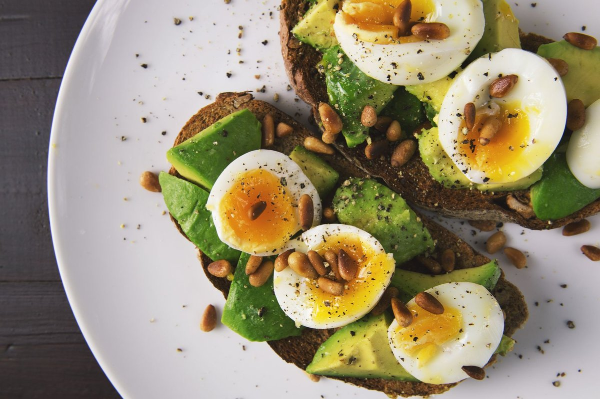

What Nobody Tells You About High Protein Breakfast

Key takeaways
- I used to stare at my 10 AM iced latte, my stomach roaring like a freight train while my brain felt completely wrapped in cotton.
- I thought I was doing everything right by grabbing a quick fruit smoothie before my morning run, but I was crashing hard every sin
- Track what feels sustainable and adjust gradually.
I used to stare at my 10 AM iced latte, my stomach roaring like a freight train while my brain felt completely wrapped in cotton. I thought I was doing everything right by grabbing a quick fruit smoothie before my morning run, but I was crashing hard every single day.
It wasn't until I completely overhauled my morning routine and committed to a **High Protein Breakfast** that my fuel levels finally matched my busy, active lifestyle.
When you are constantly on the move, a handful of berries or a piece of plain dry toast just won't cut it. Your muscles need repair, and your neurochemistry demands steady glucose without the dramatic spikes and drops.
I stopped treating my morning meal like a sugar-loaded reward and started treating it like pure, steady fuel. That mental shift changed my entire day from the ground up.
To keep my brain sharp and my physical energy constant, I shoot for at least 30 to 40 grams of quality protein right after waking up.
Instead of basic plain eggs every morning, I started mixing cottage cheese into scrambled eggs, throwing ground turkey into my sweet potato hashes, or eating savory salmon bowls. You can check out this related healthy tip to learn how I prep my savory bowls on Sunday nights.
These hearty, nutrient-dense breakfasts hold my appetite steady for five to six solid hours. I no longer panic-search the office pantry for pre-packaged cookies at mid-day.
If you struggle with dragging your feet after a heavy workout, take a look at this another practical guide for managing daily physical fatigue.
Another key takeaway I discovered on my journey: muscle recovery does not just happen while you sleep, it happens when you refuel after early movement. Skimping on morning protein leaves your recovery hanging in the balance, making your workouts feel twice as hard as they should.
I also realized that my night-time recovery was holding back my morning appetite. When my nervous system was fried, I woke up nauseous instead of hungry for a **High Protein Breakfast**.
Adding a reliable supplement like Magnesium Glycinate into my evening routine eased my muscle tension and noticeably improved my sleep quality, which surprisingly helped me wake up ready for a real, hearty meal.
Building consistency with your food routine takes time, but you can read this similar wellness insight to see how small tweaks yield giant energy returns.
If you find cooking elaborate meals stressful when you are rushing out the door, keep it stupidly simple. Pre-boil eggs, buy quality turkey sausages, or keep high-protein Greek yogurt stocked in your fridge at all times.
You can use this stay consistent with this framework to organize your fridge for success every week.
The 2-Minute Win
Blend a half cup of plain cottage cheese directly into your scrambled egg mixture before hitting the pan for an instant, effortless 15-gram protein boost that tastes incredibly rich.
Don't fall into the trap of thinking a **High Protein Breakfast** has to look like a gourmet fitness influencer plate every time. Sometimes mine is literally cold leftover chicken breast, half an avocado, and a handful of cherry tomatoes eaten directly off a paper towel while rushing out the door.
Perfectionism is the enemy of consistency. Focus on hitting your protein target, and let go of what a traditional breakfast is supposed to look like.
Real nourishment isn't about perfectly aesthetic meals; it is about giving your body the rugged structural raw materials it needs to survive and thrive.
For more simple food habits that align with your fast-paced daily life, feel free to explore more healthy-habits guides.
Educational only — not medical advice.
Disclosure: This page may contain affiliate links.
Recommended Reading
- The Ultimate Guide to Daily Hydration: Boost Energy & Wellness
- Unlock Your Best Sleep: Daily Habits for More Energy & Focus
- Morning Routines for Energy & Focus: Boost Your Day Even If You're Not a Morning Person
More in healthy-habits
 healthy-habits
healthy-habitsMillions Take Calcium And Vitamin D For Bone Health. A Major Review Finds Little Benefit
Millions Take Calcium And Vitamin D For Bone Health. A Major Review Finds Little Benefit, prompting a fresh look at gut
Read article → healthy-habits
healthy-habits8 Common Food Additives Linked To High Blood Pressure And Heart Disease
Discover 8 Common Food Additives Linked To High Blood Pressure And Heart Disease and learn how to swap ultra-processed i
Read article →Related posts
healthy-habitsMillions Take Calcium And Vitamin D For Bone Health. A Major Review Finds Little Benefit
Millions Take Calcium And Vitamin D For Bone Health. A Major Review Finds Little Benefit, prompting a fresh look at gut
Read article →healthy-habits8 Common Food Additives Linked To High Blood Pressure And Heart Disease
Discover 8 Common Food Additives Linked To High Blood Pressure And Heart Disease and learn how to swap ultra-processed i
Read article → healthy-habits
healthy-habitsYoga and Mobility for Busy People: A No-BS Daily Guide
Transform your stiff desk body with this honest guide to Yoga and Mobility designed for busy, sedentary workers who lack
Read article →